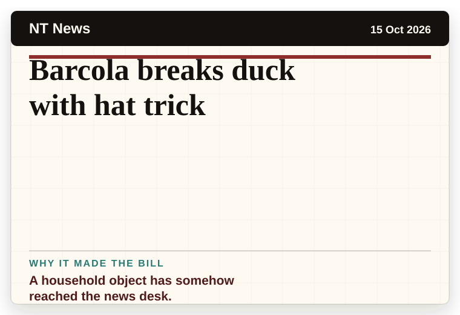
NT News
Australia
Barcola breaks duck with hat trick
A household object has somehow reached the news desk.
The latest daily picks, linked back to the original sources. Search the room, pick a source, or follow a headline out to the full story.
Record updated: 15 Oct 2026, 07:39 AM AEST
Showing 13 headline candidates from the refresh run completed on 15 Oct 2026, 07:39 AM AEST.

A household object has somehow reached the news desk.
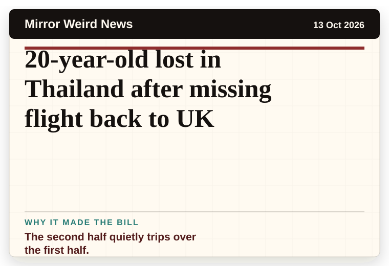
The second half quietly trips over the first half.
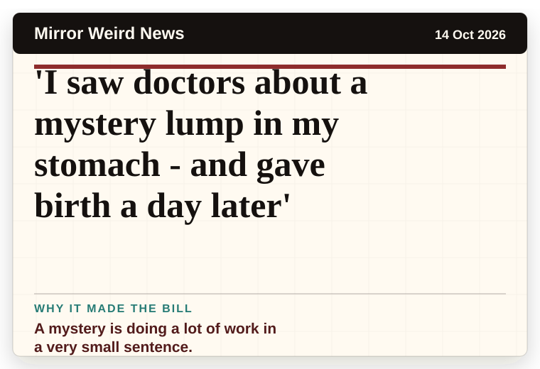
A mystery is doing a lot of work in a very small sentence.
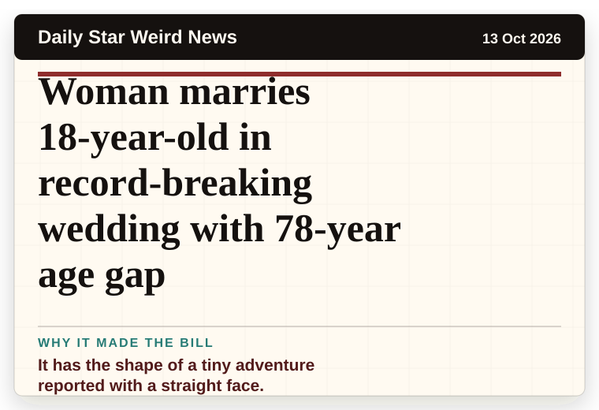
It has the shape of a tiny adventure reported with a straight face.
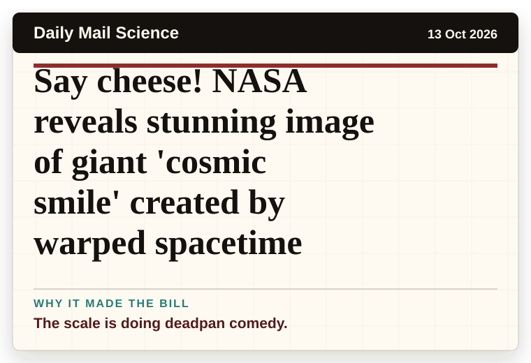
The scale is doing deadpan comedy.
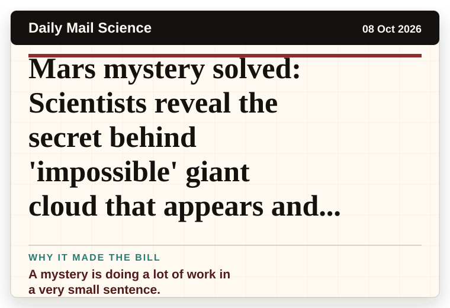
A mystery is doing a lot of work in a very small sentence.
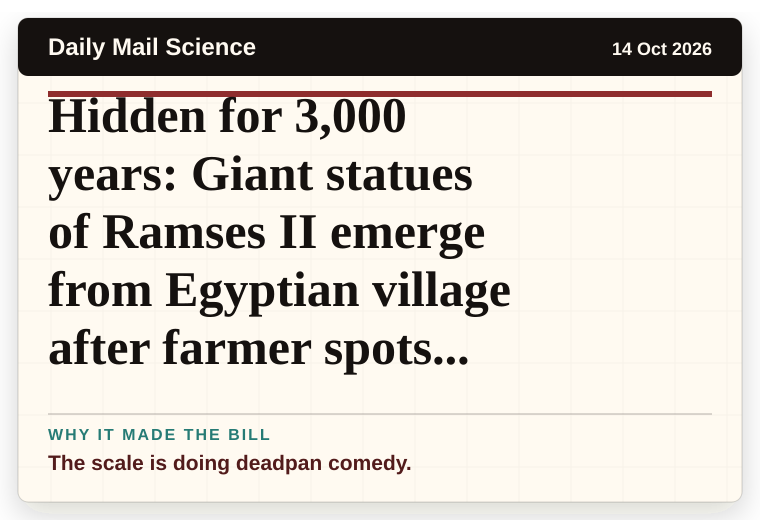
The scale is doing deadpan comedy.
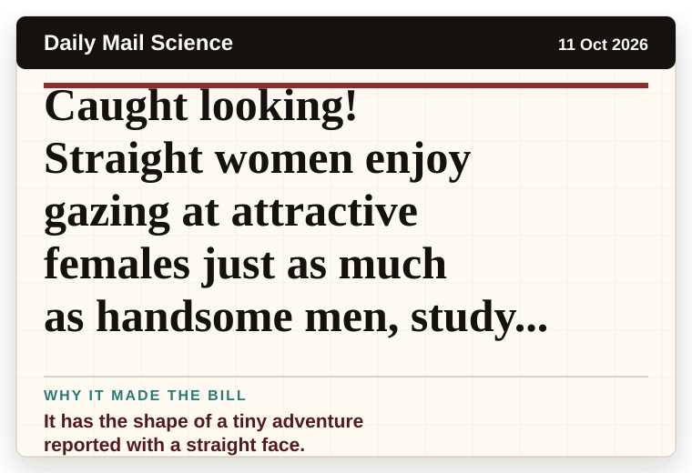
It has the shape of a tiny adventure reported with a straight face.
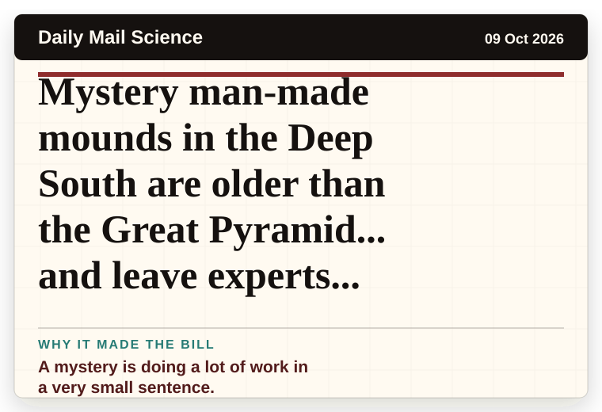
A mystery is doing a lot of work in a very small sentence.
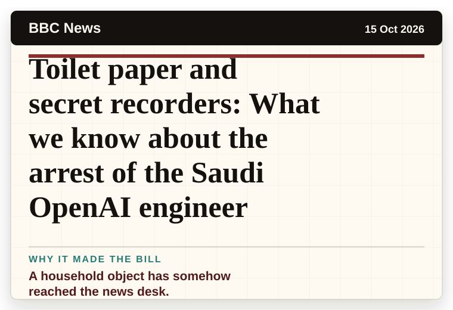
A household object has somehow reached the news desk.
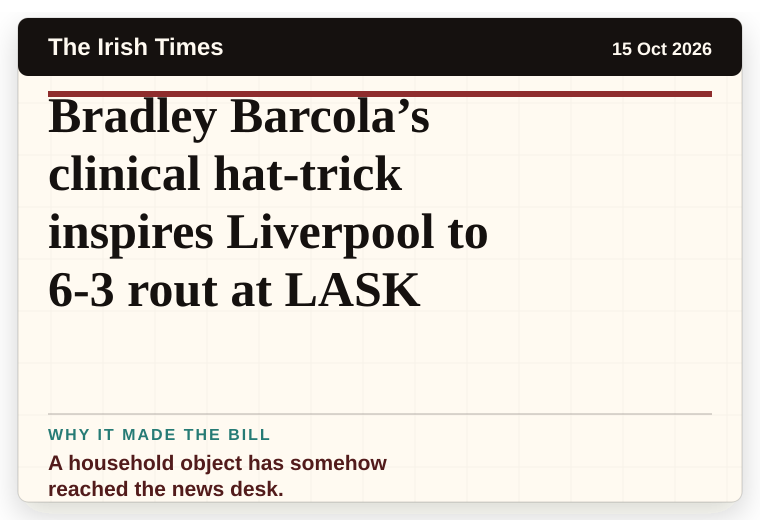
A household object has somehow reached the news desk.
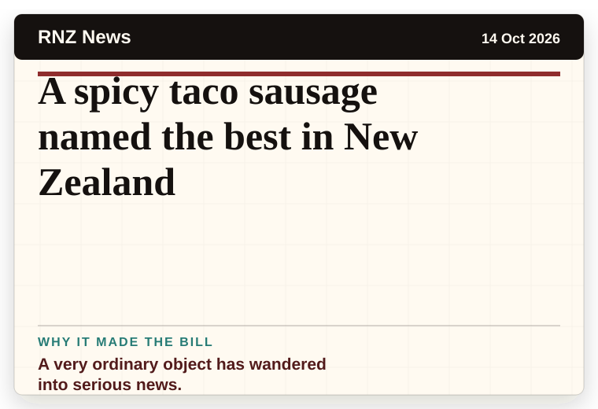
A very ordinary object has wandered into serious news.
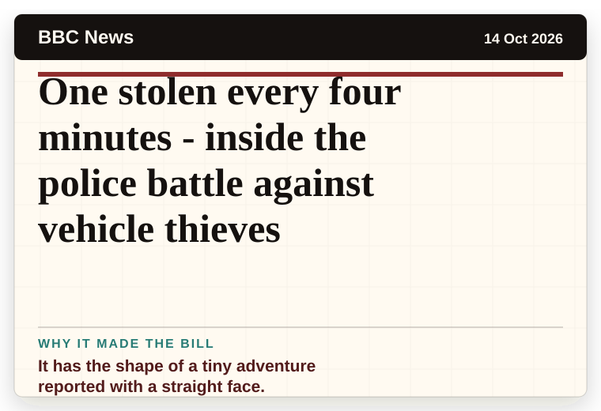
It has the shape of a tiny adventure reported with a straight face.